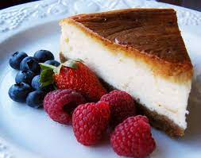

Cheese Cake
Cheesecake is a sweet dessert consisting of one or more layers
Method
1
Heat oven to 180C fan/gas 4 and base-line and grease a deep 20cm loose-bottomed cake tin. Blitz the ground
almonds, butter, sugar, flour, eggs and vanilla extract in a food processor until well combined.
2
Heat oven to 180C fan/gas 4 and base-line and grease a deep 20cm loose-bottomed cake tin. Blitz the ground
almonds, butter, sugar, flour, eggs and vanilla extract in a food processor until well combined.